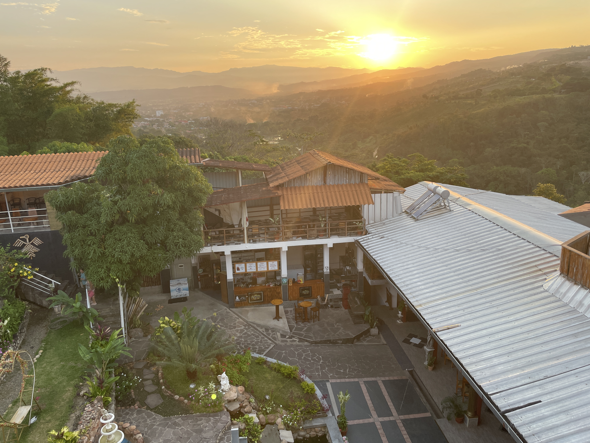
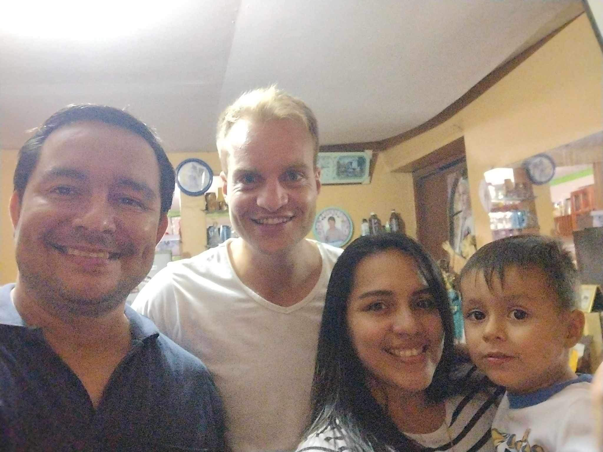

12 The first
gear
Food to enjoy,
nothing at all for a while
and a birthday surprise


A lot happened in the first weeks in the capital Lima and on the northern coast of Peru. I had had enough of moving around, meeting new people and working from busy hostels at the same time. And so at the beginning of August I picked up the map of Peru, looking for a quiet place to stay for a longer period of time. While still in the Netherlands, I had already decided to visit the Amazon rainforest. After some research on Airbnb, I ended up at Tarapoto, on the edge of the Amazon, where I would get my own room and even a balcony. What a luxury, and how happy you can be with little. For the third time I left with the night bus until I woke up and saw the sun rising like a red cannonball on the horizon between rivers, old wooden houses and banana trees.
Peru is located on the west coast of South America on the Pacific Ocean and borders Ecuador, Colombia, Brazil, Bolivia and Chile from north to south. The country has 33 million inhabitants, of which around 9 million live in the capital Lima. The dry coastal strip (la costa), the Andes mountains (la cierra) and the jungle (la selva) are the landscape types of Peru and Tarapoto is therefore located in the jungle. After a week I feel more comfortable there and manage to have a chat with the local people. “So, what do you think of the food here?'' They often ask me with great pride. Beforehand I thought that the food in Latin America was very fatty and mainly consisted of empanadas, but apparently you have more of those in Argentina. The food here is varied and truly delicious. Especially on the local market it is delicious and also cheap. If you order a menu during lunch, you can sit on a stool for €1.75 and receive, for example, Ceviche or a soup as a starter, a main course such as 'pollo a la plancha', 'pescado sudada' or 'lomo saltado' as a main course with a drink of chicha morada, made from purple corn. And it will be in front of you within 1 minute. Truly an experience because people here rarely see a blonde Westerner. But as soon as they hear a word of Spanish, the ice is quickly broken.
 Instead of coffee shops, they have stalls with fruit shakes made from the most exotic fruits such as Papaya, Pitahaya or Camu camo. So you can confidently try something different than the apple, banana and orange. The market is bursting with avocados that grow naturally on the trees here. They fry bananas in the pan and apparently they go with every dish. All parts of the chicken, pork or beef are fried on a parilla, a large rectangular coal barbecue where the entire street can eat from. Restaurant 'Central' in the capital Lima has even been voted the best restaurant in the world.
Instead of coffee shops, they have stalls with fruit shakes made from the most exotic fruits such as Papaya, Pitahaya or Camu camo. So you can confidently try something different than the apple, banana and orange. The market is bursting with avocados that grow naturally on the trees here. They fry bananas in the pan and apparently they go with every dish. All parts of the chicken, pork or beef are fried on a parilla, a large rectangular coal barbecue where the entire street can eat from. Restaurant 'Central' in the capital Lima has even been voted the best restaurant in the world.
 During a war between America and Mexico, the word 'gringo' was created, which stands for the white Western man. Every now and then people shout this to you on the street. It's not always nice to hear, but if you show that you receive it as a joke, you'll break the ice again. Sometimes you are asked if you want to take the motorcycle taxi and if you want to book a tour. People think you're a walking wallet. But of course you can't blame the people here either, because we generally have a bit more to spend.
During a war between America and Mexico, the word 'gringo' was created, which stands for the white Western man. Every now and then people shout this to you on the street. It's not always nice to hear, but if you show that you receive it as a joke, you'll break the ice again. Sometimes you are asked if you want to take the motorcycle taxi and if you want to book a tour. People think you're a walking wallet. But of course you can't blame the people here either, because we generally have a bit more to spend.
 It's so strange to have a completely empty agenda here for a month. Life always goes rapidly, and now it seems to stand still. No birthdays, housewarmings or even dancing nights for a while. Not being bombarded with the hustle and bustle of all the world problems that we are so concerned about today. Nice to be here with little. The speed of life follows the rhythm of the rising and setting sun. I have a lot of time to do my job really well and I still have hours left over. The Cumbaza River, a twenty-minute walk from my apartment, has become my favorite place to catch the last rays of sunshine after programming. When you are here, you will see and hear birds all around you, such as rapidly flapping hummingbirds or a group of hundreds of large vultures, floating on thermals in the air. With large Hawaiian palm trees along the banks with dense lianas and trees with cocoa fruit from which our chocolate sprinkles are made. Days of mating dragonflies that come to sit on your shoulder or a fluttering blue butterfly as big as your hand. And so on. A beautiful yellow bird sat quietly on a stone in front of me while I read from my book. A dip, and then drying off on a large stone that was still nice and warm from the day. Can't this last forever?
It's so strange to have a completely empty agenda here for a month. Life always goes rapidly, and now it seems to stand still. No birthdays, housewarmings or even dancing nights for a while. Not being bombarded with the hustle and bustle of all the world problems that we are so concerned about today. Nice to be here with little. The speed of life follows the rhythm of the rising and setting sun. I have a lot of time to do my job really well and I still have hours left over. The Cumbaza River, a twenty-minute walk from my apartment, has become my favorite place to catch the last rays of sunshine after programming. When you are here, you will see and hear birds all around you, such as rapidly flapping hummingbirds or a group of hundreds of large vultures, floating on thermals in the air. With large Hawaiian palm trees along the banks with dense lianas and trees with cocoa fruit from which our chocolate sprinkles are made. Days of mating dragonflies that come to sit on your shoulder or a fluttering blue butterfly as big as your hand. And so on. A beautiful yellow bird sat quietly on a stone in front of me while I read from my book. A dip, and then drying off on a large stone that was still nice and warm from the day. Can't this last forever?
 Sometimes I take out my diary and write some things down. Or I turn on the TV and try to follow the Spanish-language conversations. The football season has started again and the NAC Breda matches are fun to watch and provide some structure to the week. When you are alone so much, sometimes you go through phases where you absolutely love it and sometimes you don't like it at all. Of course, I don't know anyone here, so I'm very happy that the family I live with takes me along every now and then. For example I helped to move house sister Sol, I went to a bar with Juan-Carlos and helped mother Betty in the garden. You're just happy that you can make yourself useful. Baking pancakes with bacon and cheese for the whole family was also a great success. A young boy of three years old loved it. He really liked the syrup, and because he didn't know the syrup, he kept asking for more honey.
Sometimes I take out my diary and write some things down. Or I turn on the TV and try to follow the Spanish-language conversations. The football season has started again and the NAC Breda matches are fun to watch and provide some structure to the week. When you are alone so much, sometimes you go through phases where you absolutely love it and sometimes you don't like it at all. Of course, I don't know anyone here, so I'm very happy that the family I live with takes me along every now and then. For example I helped to move house sister Sol, I went to a bar with Juan-Carlos and helped mother Betty in the garden. You're just happy that you can make yourself useful. Baking pancakes with bacon and cheese for the whole family was also a great success. A young boy of three years old loved it. He really liked the syrup, and because he didn't know the syrup, he kept asking for more honey.
 A few weeks before my 31st birthday, Veronica, the girl I met in the north of Peru, called to come to Tarapoto that weekend. I was pleasantly surprised, because how cool it is that a Peruvian lady wants to come visit you, especially on your birthday. Before I left the north, I visited her for a weekend in the coastal town of Talara, where she showed me how she works at a large oil refinery and lives with her dog Kyra. We both love discovering new places, so we traveled to the beautiful town of Moyobamba, two hours from Tarapoto, where the many murals reflect how connected the people here live with nature. We were very disappointed when we heard that the canoe trip we had planned could not take place due to the low water level, but the disappointment had not yet set in when Veronica had already struck up a chat with a skipper who was about to go on a boat trip with his whole family to a remote beach. We were allowed to come along and were immediately accepted as one of them. They invited us to join their dinner, which once again shows how incredibly friendly the people here are. It was a fantastic birthday.
A few weeks before my 31st birthday, Veronica, the girl I met in the north of Peru, called to come to Tarapoto that weekend. I was pleasantly surprised, because how cool it is that a Peruvian lady wants to come visit you, especially on your birthday. Before I left the north, I visited her for a weekend in the coastal town of Talara, where she showed me how she works at a large oil refinery and lives with her dog Kyra. We both love discovering new places, so we traveled to the beautiful town of Moyobamba, two hours from Tarapoto, where the many murals reflect how connected the people here live with nature. We were very disappointed when we heard that the canoe trip we had planned could not take place due to the low water level, but the disappointment had not yet set in when Veronica had already struck up a chat with a skipper who was about to go on a boat trip with his whole family to a remote beach. We were allowed to come along and were immediately accepted as one of them. They invited us to join their dinner, which once again shows how incredibly friendly the people here are. It was a fantastic birthday.

Before Veronica left again, we went to look at a piece of land just outside Tarapoto. A currently undeveloped site with grand plans for a number of years to come. How special is it that you meet someone from the country itself who is also happy to help you improve in speaking Spanish. During such a weekend together, your speaking skills will of course improve like a rocket. We said goodbye and a few days later I left for the south of Peru. With a backpack full of memories of Tarapoto, where not much was needed and I could live in first gear.